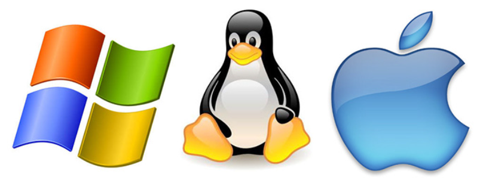

operating systems manage hardware, software, and overall laptop performance.
An Operating System (OS) is the core software that manages hardware resources and allows users to interact with the computer.
Controls CPU, RAM, storage, and hardware resources efficiently.
Determines which software and apps can run on your device.
Defines interface design, usability, and overall interaction.
Protects the system from malware, threats, and unauthorized access.
Optimizes hardware usage for smooth and stable operation.

The most widely used operating system for laptops and PCs.
Apple’s operating system designed for MacBook devices.
Open-source operating system used by developers and advanced users.